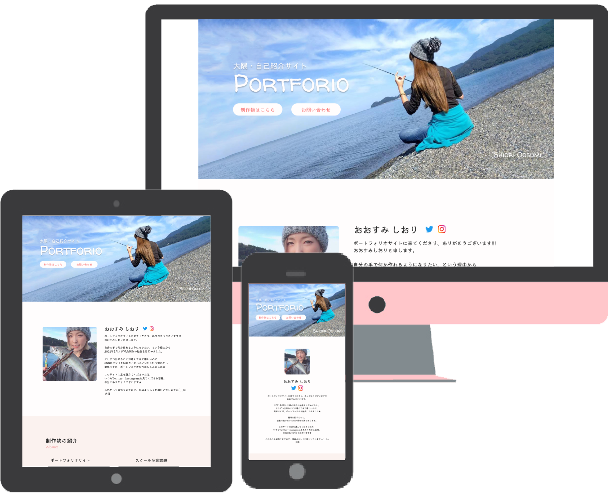
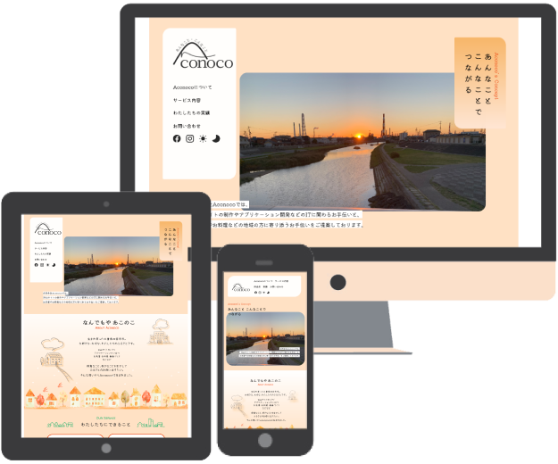
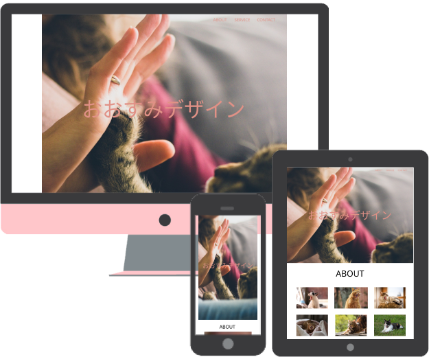

おおすみ しおり

ポートフォリオサイトに来てくださり、ありがとうございます!!
大隅詩織と申します。
自分の手で何か作れるようになりたい、という理由から
2021年6月よりWeb制作の勉強をはじめました。
少しずつ出来ることが増えてきて嬉しい気持ちと、
SNSにリンクを貼れるようになりたい!!!という憧れから
ポートフォリオの制作を決意致しました。
このサイトに足を運んでくださった方、
いつもTwitter・Instagramを見てくださる皆様、
本当にありがとうございます★
これからも頑張りますので、何卒宜しくお願い致します！
おおすみ
制作物のご紹介
Works
当ポートフォリオサイト
スクール卒業課題

Aconocoさん 公式サイト
思い出のポートフォリオ1作目(笑)
今の自分に出来ること・今後の目標
About My Skill / My Dream
Webデザイン、コーディングを中心に楽しく勉強を続けています。
Figmaを使ったデザインや、Photoshopを使った加工、HTML・CSS・JavaScript・jQueryを使った簡単なWebサイトを制作出来るようになりました。
つらいことも前向きに考えることができ、何事も楽しく努力ができる性格だと自負しております。
お客様とのコミュニケーションを大切にし、ニーズにお応えできるよう日々全力で取り組む次第です。
- 使えるようになったツール
- Figma・Photoshop少し
- 現在理解ができる言語
- HTML・CSS・jQuery少し・JavaScriptほんの少し・ WordPressのPHP少し
よりコード・言語への理解を深め、複雑なデザインにも物怖じせず挑めるよう、勉強を続けます。
Figma、Photoshopは継続して使用し、思い通りの操作ができるように理解を深めていきます。
今後はillustratorを使用したデザインにも挑戦し、サイトデザインだけでなくバナーデザインやロゴデザインなど、視野を広めたい所存です。
- デザイン面での目標
-
- Figma・Photoshopの理解度UP
- Illustlaterの使用に挑戦
- コード・言語面での目標
-
- HTML・CSSは無駄がなく美しく書けるよう理解を深める
- 苦手なjQuery・JavaScriptを克服
- 思った通りにコードが書け、どんなデザインでも形に出来るようになる

Twitterで、日々の学習に関して投稿しています。
ご興味をお持ちいただけましたら、ぜひ覗いてみてください★
お問い合わせはこちらから
Contact
ここまで見てくださりありがとうございます!!!
お仕事のご依頼や、ご意見・ご要望がございましたら
以下のリンクからお問い合わせください。
TwitterのDMよりお問い合わせ
※お急ぎの場合、こちらが気づきやすいです★
メールアドレスよりお問い合わせ
※⇒aiueoosumi.design@gmail.com
※2，3日以内に返信させていただきます★